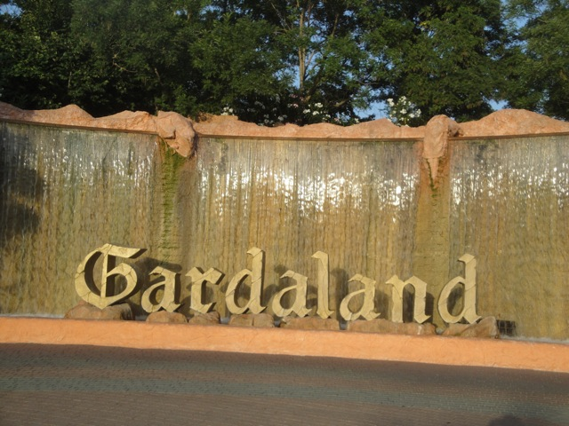
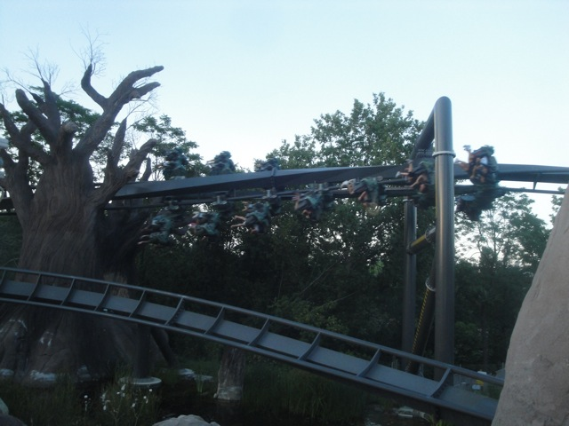

TPR's Mega Europe Trip
Rome Rome Credit Whoring Rainbow Magicland Fiabilandia Mirabilandia
Movieland Studios
Gardaland
Walygator Park
Holiday Park Europa Park Fort Fun Heide Park Schlossbeck Movie Park Germany Phantasialand
Parc Asterix Disneyland Paris
Oh yeah. One thing I forgot to mention on this trip. Yep. More Video Camera problems. It turns out that my charger is a peice of sh*t and no longer works. So I was really worried about getting footage. I was really worried about not being able to film. I tried charging it, but that didn't really work as it died at Mirabilandia, so I barely got any footage. (Turns out that I drained my battery as apparently my camera turned on during Katun ERT and was on until it just died.) But luckily, Robb had a solution. It charged when connected to his USB Cable. So he lent it to me for the trip. Once again, thank you so much.
Ooh!!! They're passing out free Coke Zero Samples!!!
Hey, they may be tiny and it may be Coke Zero, but in Europe where I'm dehydrated all the time, I don't care!!! I drank about like 10 of these things!!!!
Does that count as a credit?
 After our day at Movieland Studios, we had two day tickets to Gardaland and the park was open till 11:00, so we decided to just hang out and get some stuff done.
After our day at Movieland Studios, we had two day tickets to Gardaland and the park was open till 11:00, so we decided to just hang out and get some stuff done.
 Ooh!!! I see a roller coaster!!!!
Ooh!!! I see a roller coaster!!!!

Welcome to Gardaland!!!
Of course we're gonna hit this up first.
All right. So this was my first B&M Wingrider. What did I think?
 Honestly, I was impressed. I was expecting a forceless ride. And while its not insane, its just a ton of fun.
Honestly, I was impressed. I was expecting a forceless ride. And while its not insane, its just a ton of fun.
Enjoy your ride on Raptor!!!
No need for Fastpass tonight. It looks like we're gonna be fine.
 All right. Lets just get this out of the way as quickly as possible.
All right. Lets just get this out of the way as quickly as possible.
 This is no ordinary SLC. This one has the BONUS HELIX!!!!!!! =)
This is no ordinary SLC. This one has the BONUS HELIX!!!!!!! =)
 Though in all seriousness, it wasn't that bad.
Though in all seriousness, it wasn't that bad.
One more thing to not if you're going to Europe. Everyone smokes here. There are no smoking regulations, so everyones smoking in the park, in the lines, everywhere.
 Damn. We're on a roll with Vekoma Rides tonight.
Damn. We're on a roll with Vekoma Rides tonight.
Hey. This was a really good mine train. And well themed as well.
Is that seriously the size of their drop tower?
 Come on Gardaland!!!! This is puny!!!!
Come on Gardaland!!!! This is puny!!!!
Well at least it has a cool themed line.
We decided to see the Ice Age show. It was cool, though it would've been better if I spoke Italian. For instance, I had no clue that the female wooly mammoth was pregnant until she went into labor and I was like "It looks like..." Boom. Baby Wooly Mammoth.
We decided to check out their shooting dark ride. Ramses.
This dark ride is awesome. Its like Mummy meets Terminator.
Ooh. Trippy.
WHO MISSED THE BUS!!!?
JACKPOT!!! I HIT THE F*CKING JACKPOT!!!!!
 All right. We're up nice and early the next morning. For its time for...
All right. We're up nice and early the next morning. For its time for...
ERT ON RAPTOR!!!!!!
 Its no Kumba or anything, but its a ton of fun. Its very fun and very floaty with lots of hangtime. It almost reminds me of Hydra @ Dorney Park in a way, except with much better theming and it actually gets you more wet than the water rides.
Its no Kumba or anything, but its a ton of fun. Its very fun and very floaty with lots of hangtime. It almost reminds me of Hydra @ Dorney Park in a way, except with much better theming and it actually gets you more wet than the water rides.
 Kick the sky!!!! Oops, wrong Raptor. Sorry Cedar Point.
Kick the sky!!!! Oops, wrong Raptor. Sorry Cedar Point.
 Honestly, my only problem with this ride are the restraints. I was expecting just a rubber vest similar to that on Tatsu. But these things keep stapling you in, never giving you a chance to breathe. I really hope that this was just a bug in the design and that they fixed it for all the 2012 Wing Riders.
Honestly, my only problem with this ride are the restraints. I was expecting just a rubber vest similar to that on Tatsu. But these things keep stapling you in, never giving you a chance to breathe. I really hope that this was just a bug in the design and that they fixed it for all the 2012 Wing Riders.
 Oh yeah. We also have ERT on Sequoia Adventure.
Oh yeah. We also have ERT on Sequoia Adventure.
Umm, what exactly does this ride do?
Oh joy. That looks so thrilling.
It wouldn't even that bad if it weren't for all the trim brakes that make it crawl.
 Hey, at least its a credit.
Hey, at least its a credit.
Oh yeah. And Gardaland gave us all these personalized key chains. Grazi Gardaland!!! Grazi!!!!
Thank you Fastpass!!!! Good bye Line!!!!
Its a fun water ride, but yeah. Its a water ride. NOT A CREDIT!!!!!
Ooh. Lets take a ride on their Monorail.
Ooh. Look at all the pretty rights.
I'm confused. Where am I again?
Ooh. They have a Vekoma Mad House in the kids area.
These things are all over Europe.
Hey. Nice looking kids area.
This is so politically correct. I'm sure that all those kids are proper representations of their cultures.
 All right. Time for lunch. And yeah, they have a great selection at Gardaland. Oh, time for another America vs Europe Comparison. FANTA IS SO MUCH BETTER IN EUROPE!!! Seriously, American Fanta tastes like crap now. I refuse to drink it till I go back to Europe or somewhere else in the world. Now everyones told me that its because they use real sugar instead of High Fructose Corn Syrup. And yeah, I'm sure they do that and that helps. But thats not just it. Because its a MUCH bigger difference than that. Its much bigger than when they do Pepsi and Mountain Dew Throwbacks and use real sugar. I think someone once said that they use real orange juice in European Fanta. Now that I believe since it tastes so much orangier than in America.
All right. Time for lunch. And yeah, they have a great selection at Gardaland. Oh, time for another America vs Europe Comparison. FANTA IS SO MUCH BETTER IN EUROPE!!! Seriously, American Fanta tastes like crap now. I refuse to drink it till I go back to Europe or somewhere else in the world. Now everyones told me that its because they use real sugar instead of High Fructose Corn Syrup. And yeah, I'm sure they do that and that helps. But thats not just it. Because its a MUCH bigger difference than that. Its much bigger than when they do Pepsi and Mountain Dew Throwbacks and use real sugar. I think someone once said that they use real orange juice in European Fanta. Now that I believe since it tastes so much orangier than in America.
 Time for their kiddy coaster.
Time for their kiddy coaster.
 If you thought that this was just an ordinary Wacky Worm, you'd be mistaken.
If you thought that this was just an ordinary Wacky Worm, you'd be mistaken.
Its actually a lot of fun and has a great layout. Great for a kiddy coaster.
Time for their kiddy coaster.
Just one last credit for me to get at Gardaland. Magic Mountain. And its properly themed to SFMM, with the ads in the station.
Hey. At least they're upselling a great product.
 "Kevin!!! What the hell are you doing!!!? Get in uniform and report to Roaring Rapids immedietly!!!!!"
"Kevin!!! What the hell are you doing!!!? Get in uniform and report to Roaring Rapids immedietly!!!!!"
 Definetly one of the better Loopscrews. Not too rough and actually had some decent airtime. I actually enjoyed it.
Definetly one of the better Loopscrews. Not too rough and actually had some decent airtime. I actually enjoyed it.
"Hey David!!! It's ok to eat me!!! I promise I won't mind!!!!"
"Hey!!! Go annoy someone else today!!!"
Yeah. This wasn't one of the greatest log flumes or anything. But I had fun.
Um, yeah. This Spongebob Simulator was rough as hell.
Lets take another ride on Raptor. Because hey. Why not!!!!?

WATCH OUT FOR THAT TREE!!!!
This water fountain sucks. Its overcrowded, has a long line, the stream is super weak, so it takes forever to drink, add that with the overcrowded, and it'll take you up to 20 minutes to get a drink of water. >=(
Keep him alive so we can torture him. *evil laugh*
Yeah. We did the hedge maze. Cause hey!!! Why not!!!
 It can't be too hard.
It can't be too hard.
 Thanks for the ever-so-helpful advice. *rolls eyes*
Thanks for the ever-so-helpful advice. *rolls eyes*
We all made it out. Well, except for Colin who is a F*CKING CHEATER!!!!!!
Hey, these are fun and they have a nice theme, but they're not gonna help you escape the Italian heat.
All right. Time to check out the parks Pirates of the Carribean knock off, Icorsari.
Dude!!! This thing was awesome!!! It was almost better than the real Pirates of the Carribean in some ways!!!
Hey look!!! Another totally family friendly moment to share with everyone!!!
Yeah. It goes under the sea. Its very strange in that way.
 Speaking of really strange dark rides, lets hit up Ramses again!!!!
Speaking of really strange dark rides, lets hit up Ramses again!!!!
Grr!!! I'm the Mummy Terminator!!! I'm from the past but also from the future!!! So I guess that means I'm from the present I guess!!! Gimme a Pizza Party!!!!
Ooh. Look at the pretty lights.
Yeah. Space Vertigo has a funky fast pass door.
Come on Gardaland. This ride is so small that its nearly cliff jumpable!!! You can totally make it bigger!!!
Hey. We may have used up all our Raptor Fastpasses, but we can still get on thanks to the Single Riders Line.
 Yeah. I'm pretty sure that night rides on Raptor is the best way to close out my fantastic visit to Gardaland and Italy in general. Switzerland & Walygator Photos will be posted soon.
Yeah. I'm pretty sure that night rides on Raptor is the best way to close out my fantastic visit to Gardaland and Italy in general. Switzerland & Walygator Photos will be posted soon.
Walygator Parc
Home